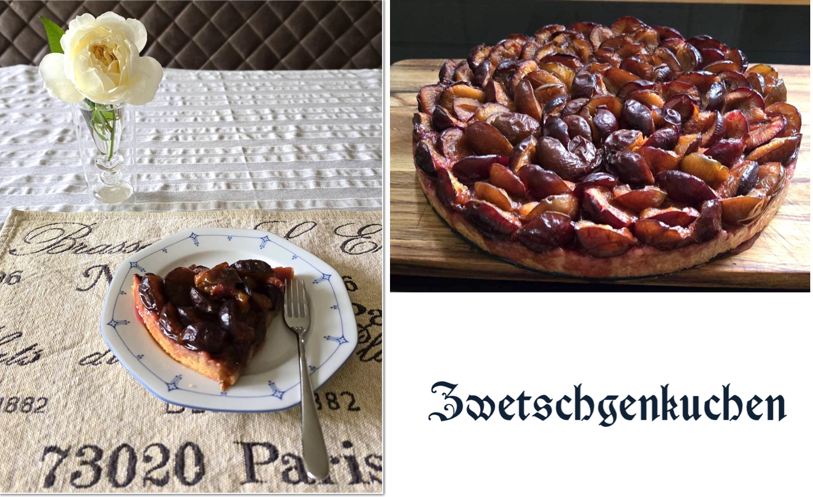

The Flavor of Cake 蛋糕的滋味
Posted on 03 October, 2025
四年前，我剛搬進新的住所。那天正逢德國統一紀念日，房東熱情地邀請我到她的客廳，與她一同分享親手做的橘子蛋糕。 那酸中帶甜的滋味，立刻勾起我許多回憶。
剛到德國時，常常會想念家鄉的味道；去到亞洲餐館，卻往往只能嚐到千篇一律的「德式亞洲味」。 相較之下，當我在麵包店或學校食堂看見新鮮出爐的蛋糕，總會多停留幾秒，彷彿它們對我微笑，邀請我敞開心胸去擁抱新的生活。 雖然我平日不太嗜甜，但偶爾還是忍不住嘗試。幾乎每一次，都沒有失望。 德國的蛋糕種類之豐富不亞於麵包：除了大家熟知的黑森林蛋糕，還有許多以水果甚至蔬菜製成的款式，隨著季節變化而輪替。其中特別的是大黃蛋糕（Rhabarberkuchen）和洋蔥蛋糕（Zwiebelkuchen）。 這些在國內難以想像的口味，卻在這裡成為日常的一部分。
在德國生活一年後，我認識了一對德台伴侶，他們常常邀我作客。 那位德國男主人繼承了祖母的手藝，能做出各式各樣的傳統糕點，其中我最喜歡的，是西梅李蛋糕（Zwetschgenkuchen）。 西梅李原產於地中海一帶，每年夏秋盛產。深藍色的果皮經過烘烤後變成桃紅，酸甜之中帶著溫暖厚實的滋味，總能讓人釋放心中的壓抑。 每次去他們家，除了品嚐蛋糕，他們還會讓我盡情地彈他們家的電鋼琴。一次又一次，我變得更加開朗，更享受在異地生活。 即使曾經有過孤單的時刻，但生活中的細節，無論是森林裡的美景、食堂偶遇的蛋糕，還是曾經歷過的人情味，總能給我帶來一絲慰藉。
* * *
學德文的過程中，我偶然遇到一個特別的詞：Mutterkuchen。 字面上是「母親蛋糕」，其實是指胎盤。 這樣的用字，不僅展現了德國人對蛋糕的喜愛，也透露出一種直接、坦率的文化特質。 這個詞深深觸動了我。 母親蛋糕是我們每個人生命的起點，我們在子宮裡靠它獲得營養，得以生長。 儘管我們不能一輩子靠蛋糕維生，卻能從蛋糕豐富的滋味得到生活的動力。
* * *
回想四年前的德國統一紀念日，雖然像平常週日一樣寧靜，卻因著房東的橘子蛋糕，讓我的味蕾和內心都感到豐富而溫暖。 如今再想起來，蛋糕的滋味早已不只是甜點的美味，更像是生命中那些溫柔卻深刻的記憶，提醒我在遠方也能嚐到人情的溫暖。

Four years ago, I had just moved into a new place. It happened to be German Unity Day (Tag der Deutschen Einheit), and my landlord warmly invited me into her living room to share a homemade orange cake. The sweet-and-tart flavor instantly stirred up many memories.
When I first arrived in Germany, I often longed for the familiar tastes of home. Visits to Asian restaurants usually left me disappointed, as the food carried the same predictable “German-Asian” flavor. In contrast, whenever I spotted freshly baked cakes at the bakery or in the university cafeteria, I couldn’t help but linger for a few extra moments, as if the cakes were smiling at me and inviting me to open my heart and embrace a new life. Though I was never much of a dessert lover, I occasionally gave in to temptation, and almost every time, I was satisfied. The variety of cakes in Germany rivals that of bread: beyond the well-known Black Forest cake (Schwarzwälder Kirschtorte), there are countless creations made with fruits and even vegetables, changing with the seasons. Among the more unusual varieties were rhubarb cake (Rhabarberkuchen) and onion cake (Zwiebelkuchen). Flavors that would be unimaginable back home somehow became part of daily life there.
After living in Germany for a year, I came to know a German-Taiwanese couple who often invited me to their home. The German host had inherited his grandmother’s skills and could make a wide variety of traditional pastries. My favorite among them was the plum cake (Zwetschgenkuchen). These plums, originally from the Mediterranean region, come into season in late summer and autumn. Their deep blue skins, once baked, turn into a rosy pink, and their sweet-and-tart flavor carries a warm, rich depth that seems to lift away any heaviness from the heart.
* * *
While learning German, I once came across a very special word: Mutterkuchen. Literally it means “mother cake,” but in fact it refers to the placenta. The choice of wording not only reflects Germans’ fondness for cake, but also reveals a kind of directness and candor in their culture. The word struck me deeply. The “mother cake” is the starting point of every life — in the womb we depend on it for nourishment, allowing us to grow. Even though we cannot live on cake for our whole lives, we can still draw energy for living from the richness of its flavors.
* * *
Looking back on the Day of German Unity four years ago, although it was as quiet as any ordinary Sunday, my landlord’s orange cake filled both my taste buds and my heart with richness and warmth. Now, when I think of it again, the flavor of that cake is no longer just the sweetness of a dessert. It has become like those gentle yet profound memories in life, reminding me that even far from home, I can still taste the warmth of human connection.